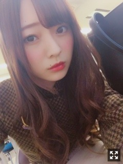
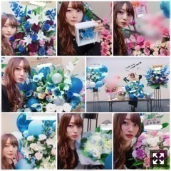
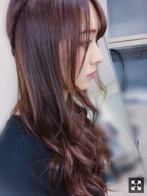
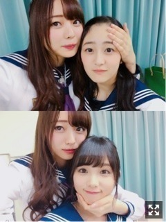
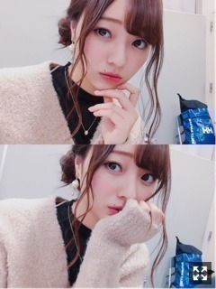

寒い風が心地よい。梅澤美波
みなさまこんばんは！！
乃木坂46 ３期生の
梅澤美波です！！

新制服！可愛くて好き( .. )
私はリボンではない方◎
こっちのがしっくりきてすき〜☺︎
もうすっかり寒いね、冬だね( .. )
ちょっくら歩けばミニイルミネーションみたいなのがあってキラキラ光ってる( .. )
すごい好きなんだよなあ冬( .. )
寒いのがすきで
冷たい風も全然いやじゃなくてむしろ寒い風に寒い〜とか言いながら当たるのが好きで
だから寒いのにお散歩行ったりするし
昨日の夜の空気が好きすぎて散歩いった！
でも寂しくなるよね〜冬って( .. )（笑）
あっという間に過ぎていってしまうから
楽しみたいなあ〜
先日の握手会ありがとうございました！
１部：サテンのネイビーパジャマ
２部：ショートパンツにハイネック
３部：ショートパンツにニット
５部：緑のワンショルダーワンピース
って感じでした☺︎☺︎
毎部変えて楽しんでます！

お花〜☺︎☺︎
毎回こんなにたくさんありがとう( .. )
癒されます、テンションがあがります、
幸せです☺︎☺︎
かわいいお花たちをありがとう。☺︎
初めましての方も、
いつもの顔ぶれの方も、
久しぶりの方も、
色んなお話できて楽しかったよ☺︎
慣れるとふざけたり
いじってみたり
馴れ馴れしくなったりするけど
そんな私も受け入れてくださいませ( .. )（笑）
次はもう１２月２３日の宮城かあ( .. )
ちょっと空いちゃうね、寂しい( .. )
クリスマス直前だね◎
サンタお楽しみに〜（笑）
生誕Tも考えてるのでお楽しみに！
私らしいデザインにしたいなあと思っています！
東京ドーム公演終えました！
加入して１年の私たちに
こんなに素敵な景色を見させてくれた先輩方に、感謝の気持ちが溢れた２日間でした
大好きで尊敬する先輩方の夢が叶った日に
こうして同じステージにいられたこと
何万人もの方たちが
同じ場所で同じ空間にいて
光るサイリウムがものすごく綺麗で
こんなに素敵な景色が見られる人生って
本当に幸せだなって感じました。☺︎
乃木坂に加入して、
普段の生活から意識が変わって
何をするときもちゃんとしなきゃって
常に私を支えてくれる存在で
私にとって乃木坂46の一員として活動する意識がすごく大切で
上手く言えないんだけど、
グループが本当に本当に大きすぎて
私はまだまだ追いついてない、もっと頑張らなきゃって思ったの
乃木坂46の一員だっていう意識はもちろんある
けど、グループが大きすぎて
１年経った今でも、
このグループにいるってことが信じられないって感じることがある
そのくらい、
すごいグループにいるんだって
もっと私頑張らなきゃって
そんな風に感じました
オーディションを受けるとき、
人生が変わるのが怖くて迷っていたけど
一歩踏み出して良かったなって
背中を押してくれた両親や姉弟、
唯一話していた１人の友人に
本当にありがとうって
３６０度見渡す限りサイリウムの
素敵な景色を見てそんなことを思ってた。☺︎
最終日のダブルアンコールのとき
花道を全員で歩いていったとき
１番後ろの方を歩いていたんだけど
前に歩く先輩方の背中が
物凄く大きくてかっこよくて
私もこうなりたいって強く思った
時間はかかるかもしれないけど
私が今見ている先輩方のように
大きい存在になれるように今を頑張ります！

髪型は２日間ともこれ！！(真顔（笑）
見にくくてごめんね
アップにしようかと思ったけど
私は下ろし巻きのイメージが強いかなと思い
見つけてもらえるようにいつも通り２日間とも同じにしました！
頭の上でちょいと三つ編み〜
顔周りの髪の毛が少なくなるから
楽なんだ〜
初めの演出で女子高生や専門学生の方たちが協力して下さったんだけど
近くの女子高生とお話したり楽しかった☺︎
二日目の専門学生の方達の中に
その唯一相談していた友人、
幼馴染みの親友がいたの(；＿；)
本番前に連絡がきて本当に嬉しかったなあ
梅澤美波推しタオルや、
みなみんタオル、ボード、うちわ
たくさん見つけたよ(；＿；)
めちゃくちゃあった！！びっくり、嬉しい限りです、、
バックステージへも沢山行けたし
天井席の皆様もちゃんと見えてたよ、届いてるよ、ありがとう！
万理華さんと日芽香さんの最後のステージ。
一緒に立てて嬉しかったです。
万理華さんは全国ツアーの融合ブロックで
一緒の曲に参加できたこと、
あるお仕事で一緒に演技ができたこと
本当に大切な思い出です、
いつでもかっこいい万理華さんに憧れていました。☺︎
日芽香さんは
逃げ水のジャケット撮影を一緒にしたり
些細なことも気にかけてくれたり
本当に優しくて笑顔がとても好きでした。☺︎
お２人が幸せでいられますように。

私のベイビーたち〜
だいすきはじゅ〜
おデコだしめちゃくちゃすき
愛おしい与田〜
たまらん食べたくなる
悔しいも嬉しいも楽しいも悲しいも
ここで味わえる全ての感情を忘れたくない！
慣れたくないなって思いました！
いつまでも初心を忘れずにいたい！
一生忘れない景色でした！
質問コーナー◎
Q.今年中にしたいことは？
A.ももことプチ旅行！計画中！
A.みなみ、みなみん、みなちゃん、うめ、梅ちゃん！ばらばら！（笑）
次時間が出来てSHOWROOMする時に、
っていうのをやろうと思っていて、
なので、いつできるか分かりませんが
質問したい！って方は
コメントに
◎SHOWROOM質問コーナー
と書いて質問お願いします！
もちろん普通のコメントも待ってるよ☺︎
あと、別日に梅桃でSHOWROOMしたいねって話してたので、できる日やるね！
お時間ある方はぜひ☺︎
告知◎
▽１１／１５ EX大衆 さま
梅桃です〜梅桃だよ〜本当に嬉しい( ..)２人でのお仕事は連載って形でなら一度だけあったけど、ほぼほぼ初めて！色々語っちゃいました！EX大衆さまはいつも見てくださっているんだなあと感じました、ありがたいです。ぜひ読んでほしい！！今度は２人で撮影でロケとか行きたいな〜って、、☺︎落ち着く！
▽１１／２２ アップトゥボーイ さま
ソログラビアです！チェックお願い致します(；＿；)裏表紙なんて聞いてなかったの、嬉しすぎるサプライズです、、いつか表紙もできるように頑張ります！
〜イベント
▽１１／１９ AGESTOCK２０１７
〜メディア等々
▽乃木坂文庫
▽N46MODE vol.0 乃木坂46 東京ドーム公演記念 公式SPECIAL BOOK
〜テレビ
日曜深夜0時放送！
▽NOGIBINGO!9
もうすぐお楽しみにな企画が！
チェックよろしくお願い致します！
余裕がある人って素敵だ
ってそんな人を見ると思うんだ〜
から私も余裕がある人になる！目標！
我ら軍団長の若月さんの写真集、
発売日前に売ってたのでたまみと買ってきて家でじっくり読んだ( ¨̮ )
あんなページやこんなページも、、！！！
キュンキュンが止まらなかったぜ〜
本当にかわいい、かっこいい( .. )
皆様ももちろん見たよね？？☺︎
サインとメッセージ下さったの( .. )
嬉しい( .. )
与田の写真集のセブンイレブンさん限定表紙予約しちゃった☺︎☺︎デコだし好きなんだ〜
楽しみだなあ〜３期生一人目の写真集。
私まで嬉しい！皆様チェックよろしくね！
あとは
大好きで甘えんぼうなたまみ
お誕生日おめでとう☺︎☺︎
ずっとそのままでいてね( ¨̮ )

握手会のとき。珍しい髪型。
じゃあおやすみね〜
夢で逢おうな〜
いつでも自分を持っていたいです、これだけはいつも強く思う、
人は人、自分は自分、ないものねだりの連鎖だけど私は私で頑張るんだ〜( .. )
どんなに環境が変わっても自分らしくいられたらいいな
みんながんばろな〜
Original：https://www.nogizaka46.com/s/n46/diary/detail/41783?ima=0519&cd=MEMBER